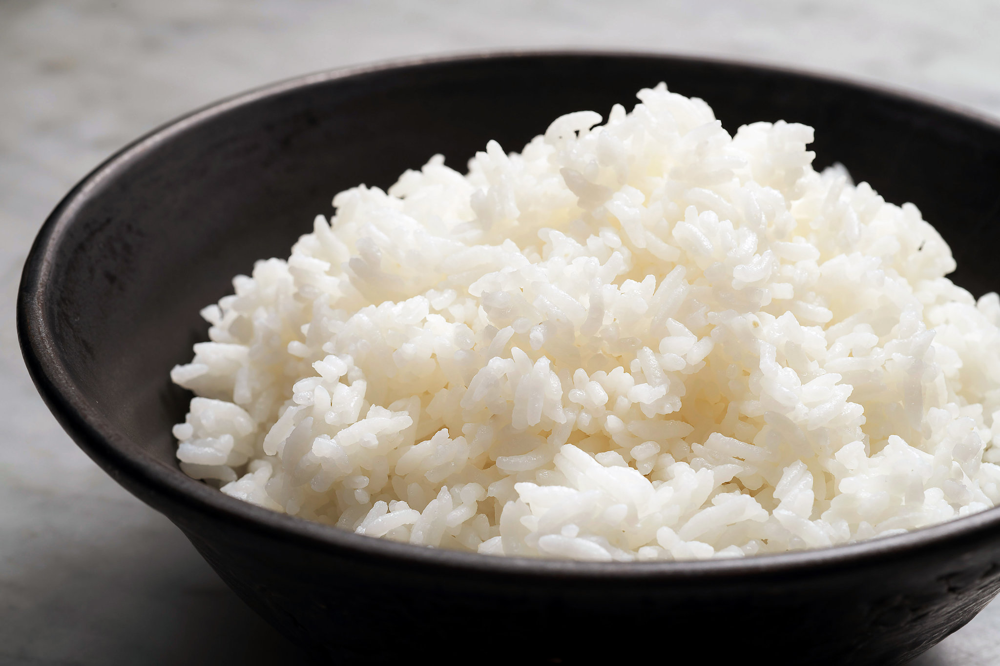

Rice

Description
While rice can be made in a variety of ways,
this recipe follows the traditional pot and stovetop method.
This way might take slighly longer than other alternatives,
but it is the cheapest in terms of the rice
presentation you can buy.
It also allows to change the serving size pretty easily.
Ingredients
-
Your choice of rice (white, brown, jasmine, etc.)
You can go for 1Kg and up. Just make sure it is not a rice
presentation that specifies a cooking method (such as microwaveable)
- Clean water
- Optional: Olive oil
Preparation
- Measure the amount of rice you want to cook in cups
- Put the rice in a pot and pour double the cups of water. Add a litte oil to taste
- Bring to a boil. Once the water starts bubbling, count 2 minutes
- After the two minutes have passed, cover with lid and bring heat to low. Count 40 minutes
- Once the 40 minutes have passed, turn heat off, and fork rice to let the steam come out